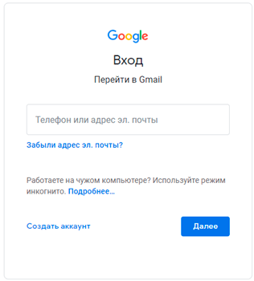

Моя почта
В этом уроке я расскажу, как войти в свою электронную почту Гугл. И что делать, если адрес не открывается.
Что такое электронная почта
Электронная почта – это личный ящик в интернете. Через него принимают и отправляют письма: как обычный текст, так и файлы с компьютера - документы, фотографии, видео.
Каждый ящик имеет свой адрес. Этот адрес присваивается только одному пользователю – он не может принадлежать нескольким людям сразу.
Адрес складывается из английских знаков без пробелов и состоит из трех частей:
- Логин - название.
- @ - разделитель, называется собака. Чтобы его набрать, нужно на английской раскладке зажать клавишу Shift и цифру 2 (вверху).
- Адрес почтового сайта – адрес в интернете, где ящик находится.
Каждый ящик в Интернете находится на каком-то почтовом сайте. Например, на сайте Яндекс или Майл.ру. И получается, чтобы зайти в свой ящик, нужно сначала открыть почтовый сайт.
Самые распространенные сайты – это mail.ru, yandex.ru и gmail.com.
Есть и другие, чуть менее популярные: rambler.ru, tut.by, ukr.net, i.ua. Это не значит, что они хуже, просто ими пользуется меньшее количество людей.
Узнать, к какому сайту принадлежит ящик, можно по его адресу. Почтовый сайт написан сразу после знака @.
- Если после @ написано mail.ru, list.ru, inbox.ru или bk.ru, то это значит, что ящик находится на сайте mail.ru.
- Если после собачки стоит gmail.com, то ящик находится на сайте gmail.com (Google).
- Если yandex.ru, yandex.by, yandex.ua, yandex.kz, yandex.com, ya.ru, то на сайте yandex.ru (Яндекс).
Как войти в почту
Вход в почту Гугл (Gmail).
Инструкция для тех, у кого ящик заканчивается на @gmail.com
Перейдите на сайт gmail.com
Часто сразу после этого ваш ящик сам и открывается. Но если этого не произошло, появится окно входа. Гугл предлагает ввести телефон или адрес почты. Телефон подойдет только в том случае, если раньше вы его прикрепляли к ящику. А так в это поле нужно ввести адрес и нажать «Далее».
Иногда вместо окна входа открывается начальная страница Gmail. В этом случае нажмите на надпись «Войти» в верхнем правом углу.
В следующем окне напечатайте пароль и нажмите «Далее».
Если всё указано верно, откроются входящие письма.

Почему моя почта не открывается
Есть три причины, по которым человек не может попасть в свой ящик:
- Неправильный логин
- Неправильный пароль
- Ящик удален или заблокирован
Про каждый случай я сейчас расскажу. И что делать тоже расскажу. Советы банальные, но это единственно верный путь открыть свою электронную почту.
Неправильный логин. У каждого ящика есть логин. Это его уникальный идентификатор на почтовом сайте. По нему сайт может вас опознать и открыть именно ваш ящик, а не чей-то другой.
Логин состоит всегда из английских букв и/или цифр. Может в себе содержать точку, а также дефис или нижнее подчеркивание. И из этого логина формируется адрес (email).
Чтобы войти в свой ящик, нужно правильно напечатать логин. Нельзя ошибиться ни в одной букве, цифре или символе!
Например, у меня логин ivan.petrov-35. И если я вместо этого наберу ivan.petrov35, то моя электронная почта не откроется – будет выдаваться ошибка.
Кроме того, на некоторых почтовых сайтах важно правильно указать не только логин, но и окончание – ту часть, что идет после знака @. Это касается всеми любимого Майл.ру. Там окончание у ящика может быть как стандартное mail.ru, так и другое: bk.ru, list.ru или inbox.ru.
Например, у меня на Майле ящик ivan.petrov-35@list.ru. Значит, кроме правильного написания логина, нужно еще и выбрать правильное окончание. Иначе в свой ящик я попасть не смогу – сайт выдаст ошибку.
Неправильный пароль. Пароль – это ключ от ящика. Набор букв и/или цифр, которыми он открывается. Если вы ошибитесь хотя бы в одном знаке, пароль не пройдет, и сайт выдаст ошибку.
Если в пароле присутствуют буквы, то они набираются только на английском языке.
Кроме того, он чувствителен к регистру. Это значит, что если в нем есть большая буква, а вы набрали ее маленькой (строчной), то такой пароль не пройдет.
Ящик удален или заблокирован. Бывает, в ящик попасть не получается, потому что он удален с почтового сайта. То есть его просто стёрли вместе со всеми письмами.
Обычно такое случается, если адрес долгое время был не активен. Например, в ящик на Майл.ру не заходили полгода - тогда по правилам сервиса его могут удалить.
Что делать, если почта не открывается
1. Откройте «Блокнот», напечатайте туда пароль от ящика, скопируйте его и вставьте на сайт.
Для этого открываем «Пуск» и прямо в окне печатаем блокнот. Запускаем программу.
Откроется окно для печати текста. Вот туда печатаем пароль. Без пробелов!
Выделяем его и копируем. Для этого наводим курсор в конец пароля, зажимаем левую кнопку мыши и обводим его. Затем щелкаем внутри правой кнопкой мыши и выбираем «Копировать».
Далее переходим на почтовый сайт и вставляем скопированное. Для этого убираем из строки пароля всё, что в ней было. Затем щелкаем внутри правой кнопкой мыши и выбираем «Вставить».
Эта нехитрая процедура поможет не ошибиться при вводе. Ведь на сайте пароль набирается точками, и трудно заметить ошибку.
2. Попробуйте разные варианты логина.
Логин – это уникальный определитель ящика на почтовом сайте. Если вы укажите всего одну неправильную букву, система не сможет определить почту, а, значит, и не сможет ее открыть.
Часто люди не то, чтобы ошибаются в написании логина, а, скорее, описываются. Например, у человека адрес jan.ivanov@mail.ru. А он печатает логин yan.ivanov. Это ошибка. Даже если пароль набран правильно, ящик не откроется.
Кстати, логин, в отличие от пароля, не чувствителен к регистру. То есть вы можете его набирать буквами любого размера. Большими, маленькими – любыми, это не важно.
3. Воспользуйтесь функцией восстановления логина и пароля.
Почтовые сайты позволяют восстанавливать доступ к ящику. Система задаст несколько вопросов о вашей почте и если ответите правильно, то попросит указать новый пароль. Сразу после этого ящик откроется.
В Mail.ru для восстановления доступа нажмите на надпись «Забыли пароль?»:
В Яндексе - на «Не помню логин» или «Не помню пароль»:
В Gmail.com щелкните по «Забыли адрес эл.почты?» или «Забыли пароль?»:
- Ни в логине, ни в пароле не бывает пробелов.
- И логин и пароль набирается только английскими буквами.
- Пароль чувствителен к размеру букв. Если вместо большой буквы вы наберете маленькую, он не подойдет.
Если не получается вспомнить логин
Бывает и так, что пароль человек помнит, а вот адрес ящика забыл. А ведь адрес, то есть логин на почтовом сайте – это главное. Без него не получится восстановить доступ.
Можно попробовать узнать логин при помощи браузера – программы, через которую вы заходите в интернет. Для этого просто щелкните по полю для ввода адреса левой кнопкой мыши. Если повезет, появится список, где может быть написан ваш логин.
Еще один способ узнать свою почту - это обратиться к человеку, которому вы отправляли письма. Если у него сохранилось хотя бы одно письмо от вас, попросите сказать, что там указано в строке адреса. Для этого нужно открыть сообщение и посмотреть в строчку под заголовком (в верхней части).
Если сайт пишет, что ящика не существует
Бывает, почтовый сайт пишет, что указано неверное имя ящика или нет такого аккаунта.
Есть две причины, почему это происходит:
- Вы ошиблись при печати логина.
- Ящик удален.
С первой причиной всё понятно. Адрес напечатан неправильно и в системе такого логина действительно нет. Нужно просто ввести его правильно.
Но если вы уверены, что логин правильный, а сайт всё равно показывает, что такой почты не существует, значит, ящик удален. Удалить его можно самостоятельно в настройках почты. Или же это может произойти автоматически.
На некоторых почтовых сайтах такое бывает, если ящиком долго не пользоваться. Например, если в свою почту на mail.ru вы не заходили более полугода, ее могут удалить.
Адрес стирается вместе со всем содержимым. Вернуть его вы сможете, но уже без писем. Для этого нужно заново зарегистрировать почту с тем же самым названием.
Ответы на вопросы
Может ли кто-то кроме меня зайти в мой ящик?
Зайти в ваш ящик может любой человек, у которого есть от него пароль. Поэтому важно хранить его в надежном месте и никому не показывать.
Можно ли изменить адрес действующего ящика?
Нет, изменить уже открытый адрес нельзя. Можно только зарегистрировать новый.
Можно ли поменять пароль от ящика?
Поменять пароль можно в любой момент. Делается это в настройках почтового ящика.